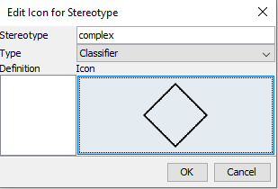
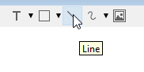

- 1 Introduction
- 2 Creating the file
- 3 Initial visibility settings
- 4 After visibility settings
- 5 Simple relationships
- 6 Relationship attributes
- 7 Complex relationships
- 8 Complex relationship attributes
- 9 Inheritance
- 10 Export diagram
Introduction
This short tutorial will show how to use Astah to create an EER diagram using UML for your database.
There are certain relevant tools needed so that you can use a class diagram to document an EER diagram.
We will:
- use a UML class diagram as the basis.
- hide various information not needed for EER diagrams.
- see how to make relationships, both simple and complex.
- add relationship attributes.
- export the diagram as svg.
Creating the diagram file
When you open Astah, you will most likely see a blank canvas, as no file or diagram is open.
Create a new file:
Then, right-click the little "P" folder icon. We are going to create a new class diagram:

You will notice further down in the above context menu, there is actually an option to create an "ER diagram". However, this will not be UML, but a different notation language. We don't use that.
We want UML.
So, a class diagram it is.
Inital visibility settings
A normal class diagram will have information such as methods, types, visibility. We don't want that.
Open the "Class Diagram0" file, the one you created in the previous step (see image below). When it is selected in the "Structure" view, you get various settings in the bottom of the left side panel.
First, on the left side panel, we want to remove the Frame Visibility (not strictly necessary, just a looks a bit cleaner):
Then, we need to set the Initial Visibility of several things.
That is found in the left side menu:

Uncheck the following options:
- Operation Compartment
- Attribute and Operation Visibility Kind
- Attribute Type
Now, whenever you create a new class, either by double clicking on the canvas of the "Class Diagram0" file, or use the class tool:

You will get a class which looks more like an ER entity:

Changing visibility settings after
What if you forget the initial visibility settings, and now you have a diagram like this:
With types, and visibility, and operation compartment.
Drag-select all. Right click. Set three visibility settings:
1 Operation Compartment Visibility
2 Visibility Kind
3 Attribute Type
Simple relationships
Relationships are drawn with an association line without end arrows like this. The drag direction (from -> to) is relevant.

When the relationship is selected, you can put on the multiplicity.
The relationship needs a description and reading direction. So, with the relationship selected, go to the left-hand-side menu again, under the "Base" tab, and type in a name
This results in the following:
In case you mess up the arrow direction of the name, you can right-click the relationship line and flip the name direction:
Relationship attributes
These kind of attributes belong to a relationship between two entities.
For example, a Customer can buy multiple tickets to some Event.
The number of tickets bought cannot be on neither Customer, nor Event, but is something which exists for each pair of Customer and Event.
Therefore, we make it a relationship attribute.
It looks like this:

The full drawn line is the relationship, the dotted line goes to the relationship attributes. Notice Astah needs a name for this box, which also becomes the name of the relationship. I have found no way around this.
It is done as follows:
Complex relationships
Sometimes 3 or more entities are involved in a relationship, called a complex relationship (or ternary relationship, if there are 3 entities).
This is represented with a diamond.
In Astah this is not possible out of the box, so we need to set up some things.
Setup
First, we need an icon for the diamond. I have just drawn the below in Inkscape:

You should be able to right-click the image and download. Or create your own.
Then the settings.
Open the menu: Tools -> Project Settings -> Set Icon for Stereotype:

In this menu, go to Profile Stereotype 1 and create a new 2:

Then double click on the new stereotype 3.
In this menu, change the Stereotype name 1, and click on the "..." 2 to select an icon.
Select the diamond image.

Click OK, then Close
That's the setup.
Creating the relationship
Create a new class, where the diamond should be, the name of the class is the name of the relationship.
In this example a doctor treats a patient for a disease. I.e. treats is the relationship.
Select the treats class. In the left side menu, there is a Stereotype tab 1, open it. Add a new stereotype 2, and call it "complex" 3, like the Stereotype icon name above.
Right-click the treats class and select "Set Customized Icon". This shows a popup, double click on the diamond image.
Your treats class should now look like the diamond image.

Then change the diamond size, and draw relationships.
The name of the complex relationship is now below the diamond. With a dirty hack, we can move the name inside the diamond.
Name in diamond
Double click on the name, "treats", so it's editable:
Then replace the name with a white space " ".
After that, use the Text tool to create a text label inside the diamond.
Final result:

Complex relationship attributes
Sometimes, a complex relationship also needs relationship attributes. This cannot be done in the same way as previous, where only two entities were involved.
The follow hack can be used.
Create a new class to hold the relationship attributes, you should name it as the relationship:
Now, we use the "Line"

to draw a line between the treats diamond, and the treats class. Then, select the line, and change the type:
This is not a particularly good solution, because the line is not anchored to anything, so if you drag around either the diamond or the treats class, the line does not follow along. You will have to pay attention to that detail.
Alternative idea
Currently, the diamond shape is "see-through". If you made a shape with white interior, you could create a note 1, scale it down, connect the note with a note anchor 2 to the treats class. Then move the note into the diamond and send it to the back 3 to hide it.

Using this approach, the dotted line is at least anchored at one end.
working on it..
How to export the diagram
Sometimes these diagrams must be included in a report.
It is important to export all your diagrams from Astah as .svg files. This is "scalable vector graphics", which will prevent the diagram from becoming pixelated in the report pdf document.
This is true for ER/GR diagrams, domain models, class diagrams, activity diagrams, etc.
It is done through this menu option: